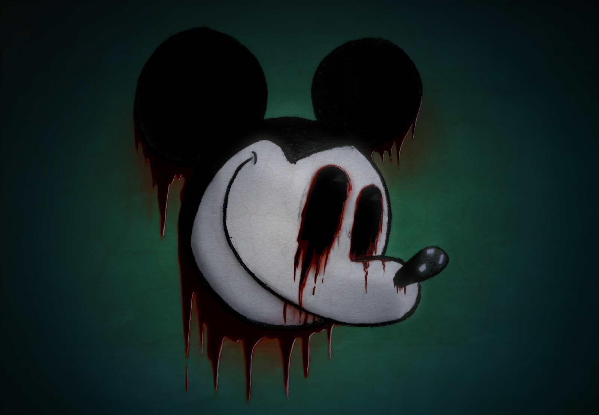

Creepypastas
-
Embora historicamente tenha sido utilizado como uma forma de manter o respeito aos deuses, o jogo da meia-noite carrega consigo um perigo significativo para aqueles que se aventuram nele. Além do risco de morte iminente, há também a possibilidade de danos mentais permanentes. É crucial compreender que JOGAR O JOGO DA MEIA-NOITE é altamente desaconselhável.
No entanto, para os corajosos que buscam adrenalina e estão dispostos a explorar os rituais mais obscuros do ocultismo, seguem instruções simples sobre como participar. Lembre-se, porém, de que estas são diretrizes a serem seguidas por sua própria conta e risco... -
PRÉ-REQUISITOS: O início do ritual deve coincidir exatamente com a meia-noite. Qualquer desvio desse horário invalidará o processo.
-
MATERIAIS: Prepare uma vela, um pedaço de papel, um instrumento de escrita, fósforos ou isqueiro, sal, uma porta de madeira e, crucialmente, uma gota de seu próprio sangue. Se mais de uma pessoa estiver participando, cada um deve ter seus próprios materiais e seguir os passos individualmente.
-
PASSO 1: Escreva seu nome completo no papel e acrescente, pelo menos, uma gota de seu sangue. Permita que o papel absorva o líquido.
PASSO 2: Apague todas as luzes do ambiente. Dirija-se à porta de madeira e coloque o papel com seu nome em frente a ela. Em seguida, acenda a vela e coloque-a sobre o papel.
PASSO 3: Bata na porta exatamente 22 vezes. Certifique-se de que seja meia-noite quando terminar. Após isso, abra a porta, apague a vela e feche-a novamente. Este ato permitirá a entrada do "Homem da Meia-Noite" em sua casa.
PASSO 4: Imediatamente após, reacenda a vela. -
Agora, o jogo começa. Com a vela acesa na mão, mova-se pela sua residência, que agora está mergulhada na escuridão. Seu objetivo é evitar o Homem da Meia-Noite a todo custo até as 03h33. Caso a vela se apague, é um sinal de que o Homem da Meia-Noite está próximo. Você tem apenas dez segundos para reacendê-la.
Se falhar em fazer isso, procure proteção dentro de um círculo de sal. Caso não consiga realizar nenhuma dessas ações, o Homem da Meia-Noite induzirá uma alucinação de seu maior medo e procederá a arrancar seus órgãos um a um, enquanto você permanece consciente, mas incapaz de reagir.
Se conseguir criar o círculo de sal, permaneça dentro dele até as 03h33.
Se conseguir reacender a vela, prossiga com o jogo. Continue até as 03h33 sem ser atacado pelo Homem da Meia-Noite ou ficar preso dentro do círculo de sal para vencer o jogo. Às 03h33, o Homem da Meia-Noite deixará sua casa e você estará seguro para continuar sua vida.
Sinais de proximidade do Homem da Meia-Noite incluem uma súbita queda de temperatura, a visão de uma figura humana puramente negra na escuridão e murmúrios suaves de uma fonte indistinta. Se perceber algum desses sinais, é aconselhável deixar imediatamente a área para evitar o confronto com o Homem da Meia-Noite. -
NÃO acenda as luzes durante o jogo.
NÃO utilize lanternas durante o jogo.
NÃO interrompa o jogo para dormir.
NÃO tente utilizar o sangue de outra pessoa em seu nome.
NÃO substitua a vela por um isqueiro, pois isso não funcionará.
E, sob nenhuma circunstância, provoque o Homem da Meia-Noite. -
Mesmo após o término do jogo, ele continuará observando você...
Boa sorte. Você vai precisar... -
Vocês se lembram daqueles desenhos antigos do Mickey Mouse dos anos 30? Aqueles que só foram lançados em DVD recentemente? Bem, existe um episódio perdido que mesmo os maiores fãs da Disney desconheciam até agora.
izem que não há nada de especial nele. É um loop contínuo, como nos desenhos dos Flinstones, de Mickey andando por seis edifícios, repetindo por dois ou três minutos antes de sumir. No entanto, em vez das músicas agradáveis que conhecemos, a trilha sonora é uma batida constante de piano por um minuto e meio, seguida por ruído branco pelo resto do vídeo.
Mas o Mickey que aparece aqui não é o alegre e dançante que todos amamos. Ele não sorri, não dança. Apenas caminha, com uma expressão séria. E, de alguma forma, sua cabeça balança de um lado para o outro, mantendo um olhar perturbadoramente sombrio.
Por alguns, todos pensavam que o vídeo acabava quando a tela ficava preta. Leonard Maltin, ao revisar o desenho para uma coleção completa, achou que era muito perturbador para estar no DVD, mas queria uma cópia digital por ser uma criação de Walt Disney. Ao digitalizar e assistir, ele percebeu algo que ninguém havia notado.
A animação durava exatamente 9 minutos e 4 segundos. Um assistente de um alto executivo da Disney e amigo do Sr. Maltin, revelou o seguinte:
"Após a tela ficar preta, permaneceu assim até o sexto minuto, antes de voltar à caminhada de Mickey. Desta vez, o som era diferente. Um murmúrio sinistro, indistinguível, como um grito abafado. Conforme o som aumentava, a imagem começava a distorcer. A calçada parecia se mover em direções impossíveis, e o rosto de Mickey lentamente se torcia em um sorriso macabro.
No minuto 7, o murmúrio se transformou em um grito horripilante, agonizante. A imagem ficava cada vez mais obscura, exibindo cores que nem poderiam existir na época. O rosto de Mickey começou a se desintegrar, com os olhos rolando para a parte inferior do queixo como bolas de gude, e seu sorriso se esticando grotescamente.
Os edifícios ao redor se transformavam em escombros flutuantes, enquanto a calçada continuava a desafiar a física. Maltin, visivelmente perturbado, saiu da sala, deixando um funcionário para terminar de assistir e tomar notas. O grito distorcido durou até os 8 minutos e alguns segundos, antes de cortar abruptamente para o rosto de Mickey nos créditos finais, com o som de uma caixa de música quebrada ao fundo.
Essa parte durou cerca de 30 segundos. O que aconteceu nos últimos 30 segundos é um mistério. Um guarda de segurança me contou que, após o último quadro, o funcionário saiu da sala com a pele pálida, repetindo 'o verdadeiro sofrimento não é conhecido' sete vezes antes de pegar a arma do guarda e se suicidar.
A única coisa que consegui relatar a Leonard Maltin foi que o último quadro mostrava um texto em russo, dizendo 'a visão do inferno traz seus espectadores para ele'. Até onde sei, ninguém mais viu o vídeo, mas vários funcionários tentaram obter o arquivo no Rapidshare, resultando em suas demissões.
Se o vídeo chegou à internet é incerto, mas se os rumores forem verdadeiros, em algum lugar online o arquivo 'suicidemouse.avi' pode ser encontrado. Se você achar uma cópia, não a assista. Entre em contato comigo imediatamente, independentemente da hora."
